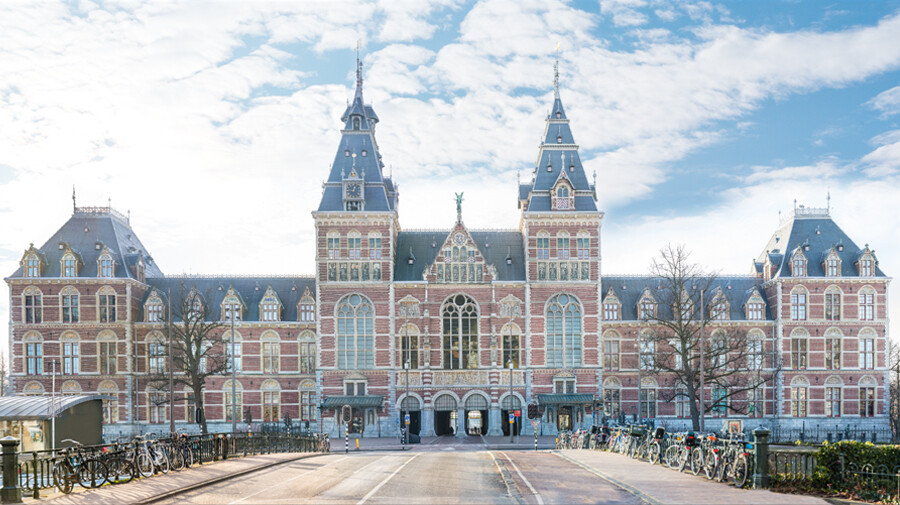

Top 10 gebouwen
Hieronder een lijst met een persoonlijke selectie van mijn 10 favoriete architectonische gebouwen:
-
Helsinki Central Station (Helsingin päärautatieasema)
-
Katedraal van Antwerpen (Onze-Lieve-Vrouwekathedraal)
-
De invalide in Parijs (Hôtel des Invalides)

-
Het Nationale Paleijs in Barcelona (Palau Nacional)
-
Sears toren in Chicago (Willis tower)

-
Chrysler building in New York
-
Rijksmuseum Amsterdam
 -
De Dom van Keulen (Dom St. Peter und Maria)
-
Shanghai World Financial Center
-
Hongars Parlament in Budapest (Országház)